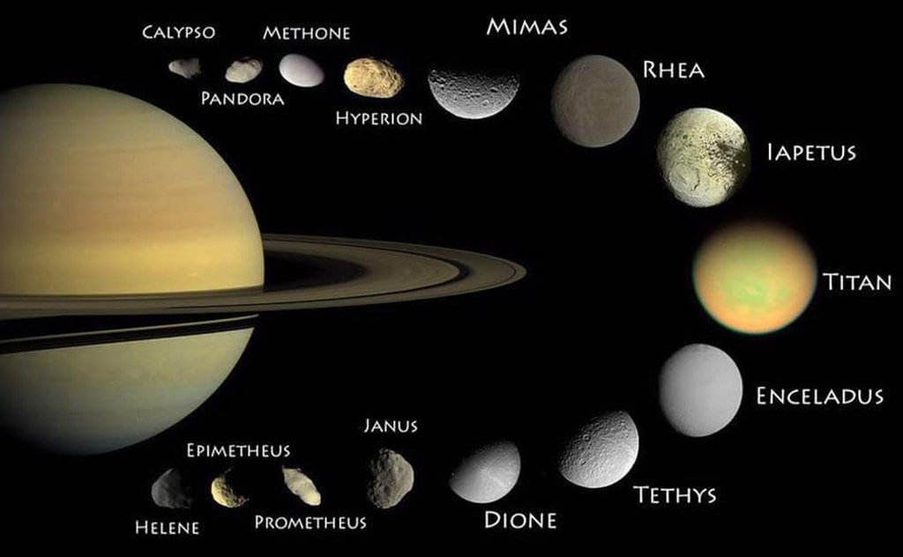
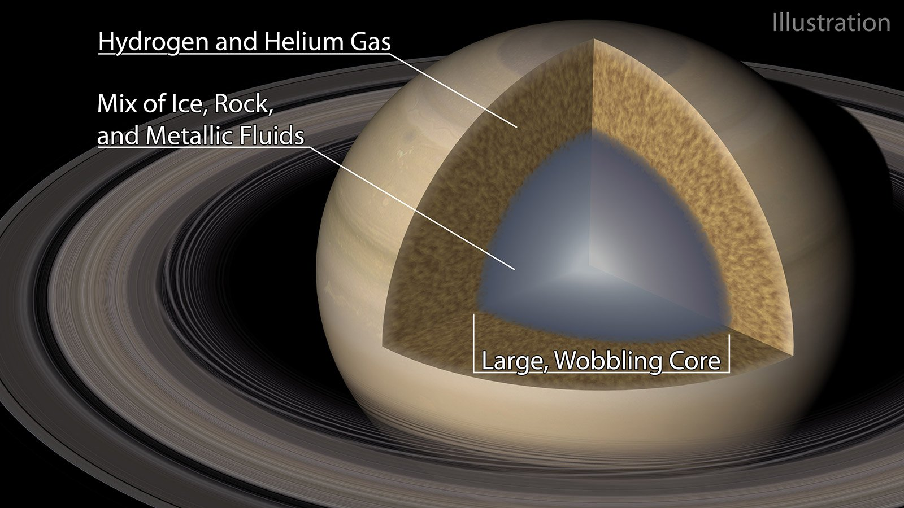
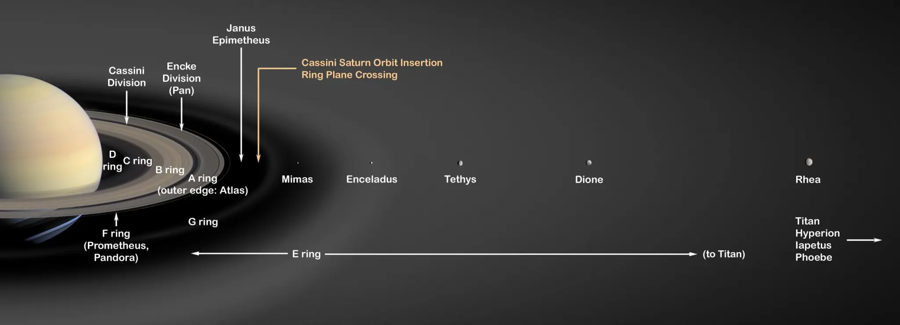
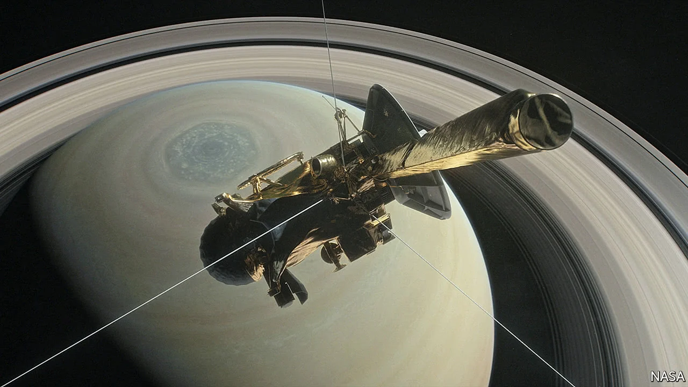
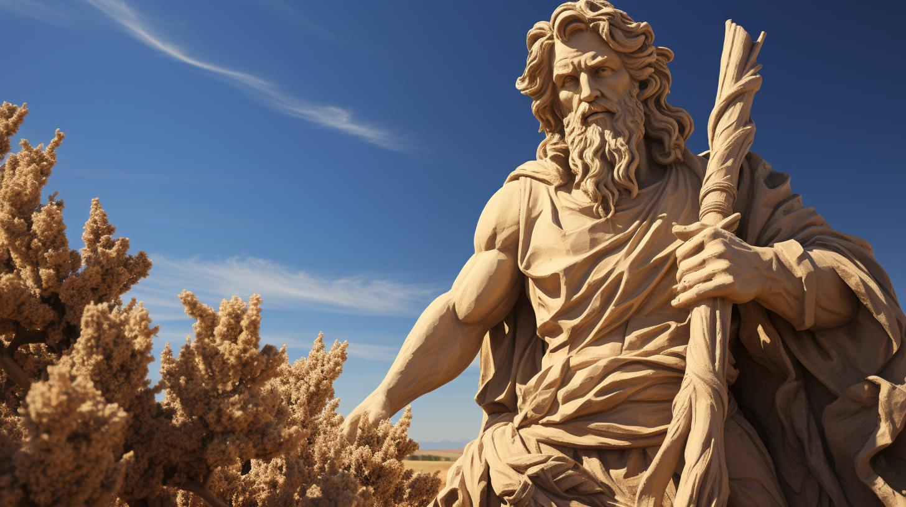

Fakta Menarik tentang Saturnus

Fakta tentang bulan pada Saturnus
Saturnus adalah planet terbesar kedua di tata surya setelah Jupiter,
dikenal karena cincin-cincin ikoniknya yang indah. Cincin-cincin ini
terdiri dari partikel-partikel es, debu, dan batu yang berukuran
dari mikroskopis hingga sebesar gunung, membentuk sistem cincin
paling kompleks di antara planet-planet lainnya. Meskipun ukurannya
sangat besar, Saturnus memiliki kepadatan yang sangat rendah, bahkan
lebih rendah dari air, yang berarti jika ada lautan raksasa yang
cukup besar, planet ini akan bisa mengapung di atasnya.
Selain itu, angin di atmosfer Saturnus berhembus dengan kecepatan
luar biasa, mencapai hingga 1.800 km/jam di garis khatulistiwanya,
menjadikannya salah satu angin tercepat di tata surya. Kutub utara
Saturnus juga menampilkan fenomena misterius berupa badai berbentuk
heksagon yang unik dan tidak terlihat di planet lain. Fenomena ini
telah diamati oleh berbagai misi antariksa, termasuk oleh pesawat
ruang angkasa Cassini-Huygens, yang menghabiskan hampir 20 tahun
mempelajari Saturnus dan mengungkap banyak rahasia planet ini.
Saturnus memiliki lebih dari 80 bulan, dengan Titan sebagai bulan
terbesar yang bahkan lebih besar dari planet Merkurius. Titan adalah
satu-satunya bulan di tata surya yang memiliki atmosfer tebal, mirip
dengan Bumi pada masa awalnya. Planet ini juga memancarkan lebih
banyak energi daripada yang diterimanya dari Matahari, yang diyakini
disebabkan oleh proses kompresi helium di inti Saturnus yang
menghasilkan panas tambahan. Semua fakta ini menunjukkan betapa unik
dan menakjubkannya Saturnus, sebuah planet yang masih menyimpan
banyak misteri untuk dijelajahi.
Struktur dan Atmosfer

Struktur planet Saturnus
Saturnus adalah planet raksasa gas yang sebagian besar terdiri dari
hidrogen dan helium. Di dalam planet ini terdapat inti yang mungkin
terbuat dari campuran es, logam, dan batuan berat, yang dikelilingi
oleh lapisan hidrogen metalik cair. Lapisan ini terbentuk akibat
tekanan yang sangat tinggi di bagian dalam planet. Di atas lapisan
hidrogen cair ini, terdapat hidrogen dalam bentuk gas, yang
merupakan lapisan terluar dari struktur Saturnus. Suhu dan tekanan
di dalam Saturnus meningkat secara drastis seiring bertambahnya
kedalaman, menjadikannya salah satu lingkungan paling ekstrem di
tata surya.
Atmosfer Saturnus terdiri sebagian besar dari hidrogen (sekitar 96%)
dan helium (sekitar 3%), dengan jejak elemen-elemen lain seperti
metana, amonia, dan uap air. Atmosfer planet ini dibagi menjadi
beberapa lapisan, masing-masing dengan karakteristik unik. Di
permukaan, terdapat awan yang berwarna-warni dan bergaris yang
terbentuk akibat pergerakan angin dan suhu yang berbeda. Di bagian
dalam atmosfer, terdapat badai besar yang sering muncul, termasuk
badai oval raksasa yang terlihat di kutub utara, yang dikenal
sebagai badai heksagonal. Kecepatan angin di atmosfer Saturnus dapat
mencapai hingga 1.800 km/jam, menjadikannya salah satu angin
tercepat di tata surya. Badai ini dan pola cuaca lainnya memberikan
wawasan tentang dinamika atmosfer Saturnus yang sangat aktif.
Sistem Cincin Saturnus

Kenampakan Cincin Saturnus
Sistem cincin Saturnus adalah salah satu fitur paling menakjubkan di
tata surya. Cincin-cincin ini terdiri dari partikel-partikel es,
debu, dan batuan dengan berbagai ukuran, mulai dari butiran
mikroskopis hingga bongkahan besar seukuran gunung.
Partikel-partikel ini membentuk lapisan cincin yang tipis namun
sangat luas yang mengelilingi planet, membentang hingga ratusan ribu
kilometer di luar atmosfer Saturnus.
Cincin-cincin Saturnus diyakini terbentuk dari sisa-sisa bulan atau
komet yang hancur akibat gravitasi kuat Saturnus. Ketika benda-benda
tersebut terlalu dekat dengan planet, gaya pasang surutnya
menghancurkan mereka menjadi partikel-partikel yang kemudian
tersebar membentuk cincin. Saturnus memiliki tujuh cincin utama yang
diberi nama berdasarkan urutan penemuannya, dan masing-masing cincin
memiliki komposisi serta karakteristik unik yang dipengaruhi oleh
interaksi gravitasi dengan bulan-bulan Saturnus.
Misi Eksplorasi Saturnus

Eksplorasi Cassini-Huygens
Salah satu misi eksplorasi paling penting untuk Saturnus adalah misi
Cassini-Huygens yang diluncurkan pada tahun 1997 dan tiba di
Saturnus pada tahun 2004. Selama 13 tahun, pesawat ruang angkasa
Cassini mengorbit Saturnus dan mengirimkan data yang luar biasa
tentang planet ini, sistem cincinnya, dan bulan-bulannya. Pada tahun
2005, probe Huygens yang dibawa oleh Cassini berhasil mendarat di
bulan Titan, mengungkapkan detail tentang permukaan dan atmosfer
bulan terbesar Saturnus tersebut.
Misi Cassini mengungkap banyak informasi baru tentang Saturnus,
termasuk struktur detail cincin-cincinnya, fenomena atmosfer yang
tidak biasa, dan adanya lautan bawah tanah di bulan Enceladus. Data
yang dikumpulkan oleh Cassini memberikan wawasan tentang potensi
kehidupan di lautan es Enceladus dan membantu para ilmuwan memahami
lebih banyak tentang dinamika planet raksasa gas. Misi ini berakhir
dengan "Grand Finale" pada tahun 2017 ketika Cassini dengan sengaja
memasuki atmosfer Saturnus dan terbakar, mengakhiri misinya dengan
cara yang spektakuler.
Mitos dan Fakta tentang Saturnus

Mitologi Dewa Saturnus
Dalam mitologi Romawi, Saturnus adalah dewa pertanian dan waktu,
sering digambarkan sebagai sosok yang memegang sabit atau alat
panen. Saturnus juga dikenal sebagai dewa yang memimpin zaman
keemasan, periode kemakmuran dan kesuburan yang melimpah. Di
berbagai budaya kuno, planet ini sering dikaitkan dengan konsep
keteraturan dan siklus kehidupan, menunjukkan bagaimana manusia
zaman dahulu mengaitkan pergerakan planet dengan fenomena alam dan
kehidupan mereka sehari-hari.
Seiring dengan perkembangan ilmu pengetahuan, banyak mitos tentang
Saturnus yang akhirnya tergantikan oleh fakta ilmiah yang lebih
akurat. Misalnya, penemuan cincin Saturnus dan pemahaman tentang
komposisinya menunjukkan bahwa mereka adalah fenomena alam yang
dihasilkan oleh gravitasi dan gaya pasang surut, bukan simbol dewa
atau kekuatan gaib. Fakta lain seperti rotasi cepat Saturnus yang
hanya memakan waktu sekitar 10 jam per hari juga menunjukkan betapa
unik dan kompleksnya planet ini dibandingkan dengan pemahaman kuno.